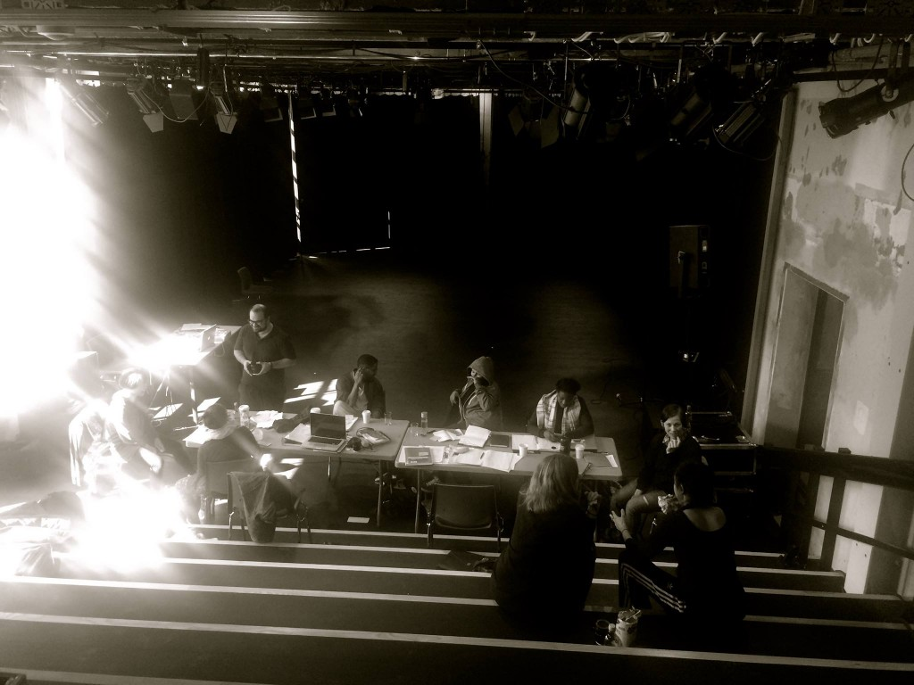

TEKSTLAB - lukket prøverom
- Kategori:
- Tverrfaglige kurs
Tverrfaglige kurs
Åpent for profesjonelle skuespillere og andre profesjonelle deltakere med spesifisert bakgrunn og erfaring. Se søknadsteksten for spesifikasjoner. Legg ved CV. - Dato:
- 12.09.2016 til 16.09.2016
- Start kl :
- 10:00
- Slutt kl :
- 15:00
- Adresse:
- Norsk Skuespillersenter, Welhavens gate 1, Oslo

{kind=link}
TekstLab v/The Artxchange - et laboratorium for scenetekstutvikling og iscenesettelse av nyskrevet scenetekst/dramatikk
Tidspunkt:
Mandag 12. september, kl 10.00 - 15.00
Onsdag 14. - fredag 16. september, kl 10.00 - 15.00
TekstLab er et laboratorium for scenetekstutvikling og iscenesettelse av nyskrevet scenetekst og dramatikk
TekstLab har siden 2008 vært et tilbud til kunstnere som arbeider med scenetekstutvikling. Intensjonen med prosjektet er å få frem nye stemmer nye historier og uttrykk ved å gi kunstnere mulighet til utvikle idéer, konsept, eller utkast til tekster gjennom prosessarbeid.
Programmet har som mål å skape et åpent miljø for å eksperimentere og praktisk utvikle scenetekster.
Arbeidet foregår gjennom eksperimentering på gulvet i samspill mellom tekst, fortellinger, lyd, språk og fortellerform. Målet er å skape prosesser som trekker på den brede og tverrfaglige kompetansen, erfaringene, språkene og uttrykkene som finnes hos kunstnerne som deltar i prosessen.
Denne uken på Skuespillersenteret fortsetter TekstLab med å utforske nyskrevne dokumentariske tekster fra serien: "the politics of identity"
Generell informasjon
TekstLab samarbeider med Dramatikkens hus, Norsk Skuespillersenter, Cafeteatret / Nordic Black Theatre, Sentralen og Biblo Tøyen. TekstLab er støttet av Norsk Kulturråd, Talent Norge, Bergesenstiftelsen og Fond For Utøvende Kunstnere.
TekstLab er ledet av Shanti Brahmachari.
Scratch Prøverom, som er en annen del av TekstLab, på Skuespillersenteret blir fra 19. - 23. september: Scenekunstnere prøver ut egne ideer, møter veiledere og utforskningen i Prøverommet ender med en tekst-i-prosess visning på TekstLab Festival 27.-31. oktober på Dramatikkens hus og Cafeteatret / Nordic Black Theatre. Nærmere informasjon om festivalen kommer på nettsiden: www.tekstlab.com
Årets TekstLab Scratch Festival er på Dramatikkens hus og Cafeteatret / Nordic Black Theatre fra 27. – 31. oktober med nyskrevne råtekster, tekst-i-prosess, stunts, visninger, lesninger og åpne samtaler.
Kontaktinformasjon:
Har du en idé, tekst eller et konsept du vil utvikle? i TekstLab? Ta kontakt: shanti.b@hotmail.com
Foto: Shanti Brahmachari